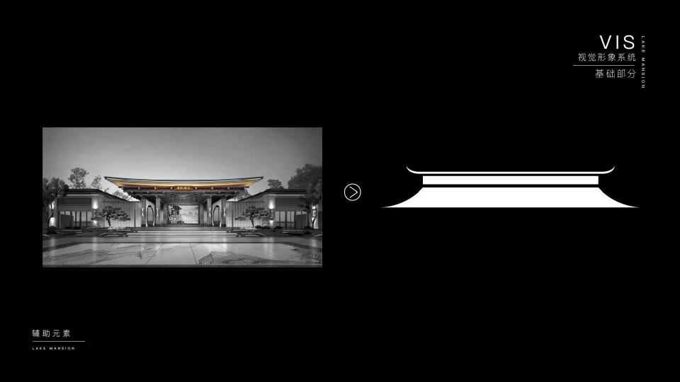
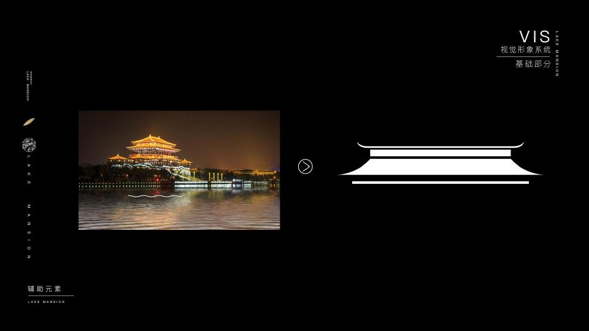
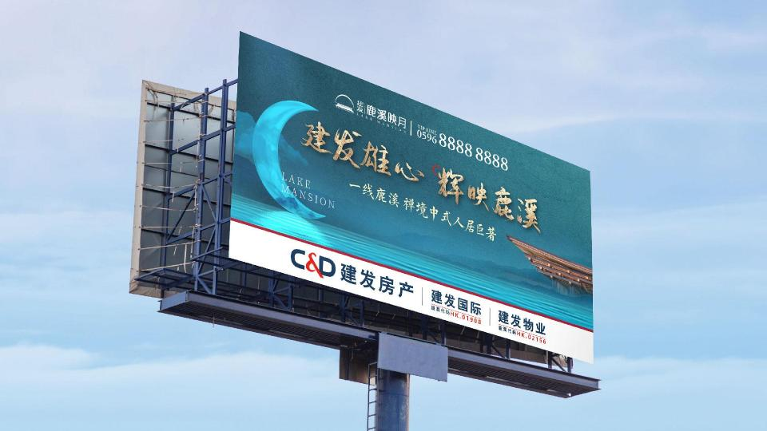
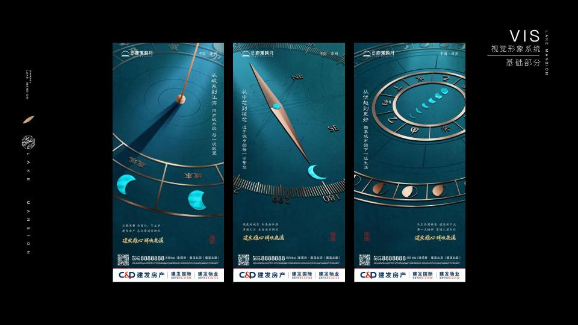
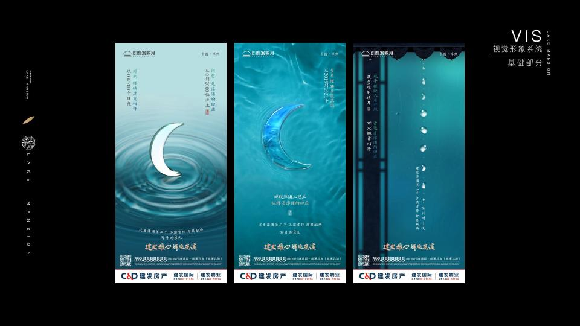

DESIGN

Overview项目概览
以月为引，
让自然回到日常。
围绕「安得广厦，相与同安」的核心概念，提取月相、拱月、水面倒影与东方建筑意象，构建一套克制而完整的地产传播视觉系统。
月相东方自然导视生活方式
Brand Foundation 品牌基础
01—15

Moon Concept 月相概念
16—27月牙 · 半月 · 满月
月相序列与图形组合
Visual System 视觉系统
28—35苍蓝 / 瀑布蓝 / 枣红 / 金色
一组来自自然与东方建筑的色彩秩序Outdoor & Space 户外与空间
36—48
Scale / 现场尺度
将月相图形延伸至围挡、灯箱、精神堡垒、导视牌与礼赠物料，在真实环境中保持安静而清晰的识别。
Campaign Applications 传播应用
49—66

End Note建发 · 鹿溪映月